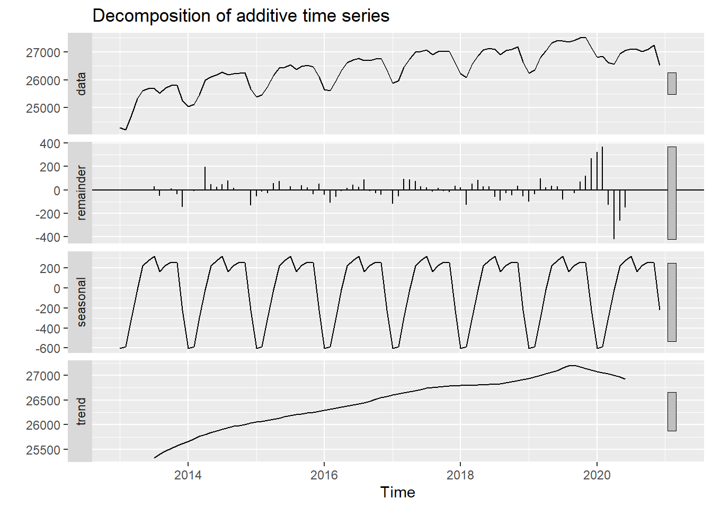
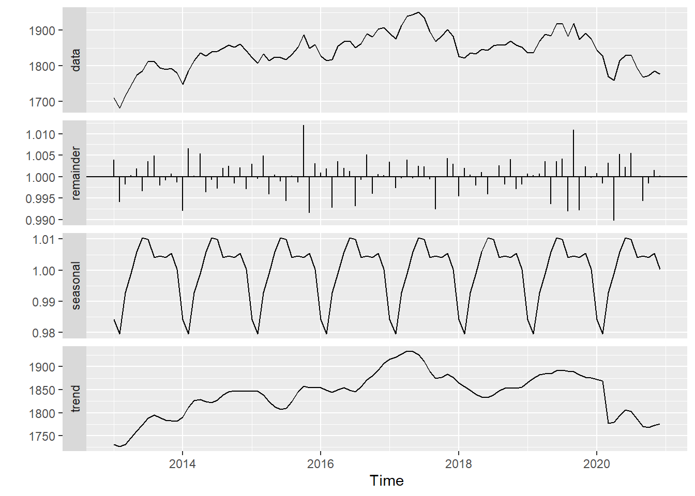

5.6 시계열 분해(Decomposition)
앞에서 계속 언급했던 시계열 특성인 추세(Trend), 계절성(Seasonality), 자기상관성(Autocorelation) 중에 자기상관성은 ACF, PACF 함수를 사용하여 확인할 수 있는 방법을 설명하였다. 그렇다면 추세와 계절성은 어떻게 확인할 수 있는가? 몇몇 패키지에서는 시계열 데이터에서 추세와 계절성을 분해하여 볼 함수를 제공한다. , R의 기본 패키지인 stats 패키지에서 decompose(), stl() 함수, seasonal 패키지의 seas() 함수를 통해 시계열을 trend, seasonality, 잔차 등으로 분리하여 ploting 할 수 있다. 각각의 함수는 시계열 decomposition 알고리즘의 차이로 인해 약간씩 결과가 다르게 나타난다.
employees <- read.csv('./산업별_취업자_20210206234505.csv', header = TRUE, na = '-', strip.white = TRUE, stringsAsFactors = TRUE)
colnames(employees) <- c('time', 'total', 'employees.edu')
ts(employees[, 3], start = c(2013, 01), frequency = 12) %>%
decompose() %>% autoplot()
ts(employees[, 3], start = c(2013, 01), frequency = 12) %>%
stl(s.window = 'periodic') %>% autoplot()ts(employees[, 3], start = c(2013, 01), frequency = 12) %>%
seasonal::seas() %>% autoplot()
ts(employees[, 3], start = c(2013, 01), frequency = 12) %>%
seasonal::seas(x11 = '') %>% autoplot()
위의 예제에서 사용한 데이터는 통계청 국가통계포털(https://kosis.kr)에서){.uri}에서 다운로드 받은 자료로 국내통계 > 노동 > 경제활동인구조사 > 취업자 > 산업별 취업자에서 시점을 2013.1월부터 2020.12월까지, 산업구분을 전체 계와 교육서비스업으로 설정 후 행렬전환 기능을 사용하여 행에 기간, 열에 산업을 설정한 후 다운로드 받음. ( download)